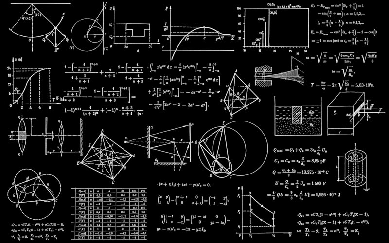

科學探索
SCIENCE & KNOWLEDGE

量子科學
量子力學揭示了微觀世界的奇妙規律——疊加態讓粒子同時存在於多個狀態， 糾纏現象讓分隔的粒子瞬間影響彼此。這不僅顛覆了我們對現實的認知， 更催生了量子計算、量子通信等革命性技術。
量子粒子波動模擬
宇宙科學
從大爆炸到黑洞，從暗物質到宇宙膨脹，宇宙學探索著時空的終極奧秘。 每一顆恆星的故事，每一個星系的運動，都在訴說著 138 億年的宇宙史詩。 我們仰望星空，也在凝視著過去。
星系螺旋旋轉模擬

人工智能及其數學運用
人工智能的核心是數學——線性代數構建了神經網絡的骨架， 微積分驅動了梯度下降的優化，概率論賦予了模型預測的能力。 從矩陣運算到反向傳播，數學是 AI 從理論走向實踐的橋樑。
神經網絡脈衝傳播